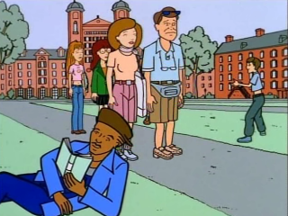

Episode Guide
Episode Guide
|  |
College Bored Episode #103 - March 17, 1997 Written by Sam Johnson and Chris Marcil Song List Entries For This Episode Oops! List Entries For This Episode Transcript For This Episode |
|
Previous "The Invitation" (#102) |
Next "Cafe Disaffecto" (#104) |
|
Cast |
|---|
|
Regular:
Daria,
Quinn,
Helen,
Jake,
Jane,
Brittany,
Kevin,
Mack
Guest: Doug, Susan, Ramona, Heather Non-Speaking: Jodie |
|
Plot |
|
Summary:
When Daria and Quinn have to visit a college as part of a college prep course, Helen and Jake take them to their alma mater, Middleton College. |
|
Interesting Tidbits |
Continuity:
|
|
Memorable Quotes |
|
Quinn - I think people who run over animals should get run over themselves to see how they like it. Daria - What about unpopular animals? Quinn - Unpopular animals don't count. Daria - What about the stupid ones? Daria - One more time: I am not taking a college prep course. Actually, I may just skip college and stay home. It'll save me the trouble of moving back in later. (Jake swerves into traffic) Helen - Watch the road! Instructor - Today's admission standards are more rigorous than ever, which is why... Jane - Can we get on with this? I have someplace to go. (looks at Jodie) Television counts as a place. Kevin - Pst. Daria, what did you get for number one? Daria - The thing about who I really am? Kevin - Yeah. Daria - Try "cross-dresser." Professor - Daria, I know it's only the first week of freshmen year, but I wonder if you'd consider transferring to the graduate school. Daria - I'm not really sure I want to be a professional student. Professor - But I don't want you to study. I want you to teach. Daria - Well... Professor - Not here, of course. On our Paris campus. Daria - Oh! Okay. Professor - Superb! Now I can use your dorm room to carry on affairs with some of the more beautiful undergraduates. Thank you! Daria - How come even in my fantasies everyone's a jerk? Jake - We'll all head up to the old alma mater this weekend. Quinn - Wait! We get to pick the college. And no one said you could come. Helen - But Quinn, your father and I would love it if you kids followed in our footsteps. Quinn - We're walking? Uh! (leaves) Daria - Maybe we should visit your old nursery school first. Heather - Okay, next is the old bell tower in the center of campus -- the historical meeting place of... Quinn - That sounds really interesting. Which historic street are all the fraternities on? Daria - My sister wants to study group psychology. Heather - Right. Helen - Remember when I used to walk through the courtyard? You and all the other guys would lean out the window and shout obscene comments. (laughs) College men. Animals! (beat) Quinn! (runs out) Daria - What I don't know, I can fake. But cash only. I don't take checks from college students. Daria - Okay, look, I'm not going to rewrite this paper for you, but I will give you a couple of tips that will help you rewrite it. First, the book title Sons and Lovers does not have an apostrophe in it... anywhere. Second, unless your ex-boyfriend is an authority on D.H. Lawrence, don't base your thesis on something he said while making out. Girl - Mm. What about something he said when we broke up? Daria - No. Mack - I learned about the first-string exemption. Turns out if you make the starting squad, you never have to take any exams. Instructor - All right! Mack - Yeah. I'm looking forward to a great education. Instructor - How did you like the famous Middleton College? Quinn - Daria got us thrown out. Daria - I got us thrown out? I beg to differ, Keg Queen. Kevin - Keg Queen?! Can I have your autograph? Quinn - Dream on, naked boy. Geek - Hi, sir. This is something for your daughter, Daria. She wrote a paper for me. Jake - And she made you pay in cash? Geek - Yes, sir. Jake - Good girl. Jane - What happened to all your paper-writing money? Daria - My mom wouldn't let me keep it. She said it was wrong to encourage cheaters and to profit from them. Jane - So, she's giving up being a lawyer? Daria - I asked her that. And I'm sure some day we'll once again be on speaking terms. |
|
Mike Quinn's Delayed Reaction Review |
|
Fantastic Voyage:
The fantasies of the various students in the SAT class (were they even talking about the SAT's, anyway?) were amusing. None of them were directly about going to college but most high school kids probably think that way about college. Daria seems to have a dark view on going to college here; even the administrator in her fantasy was a jerk (most of them are, but most people are cool in your own fantasies). |